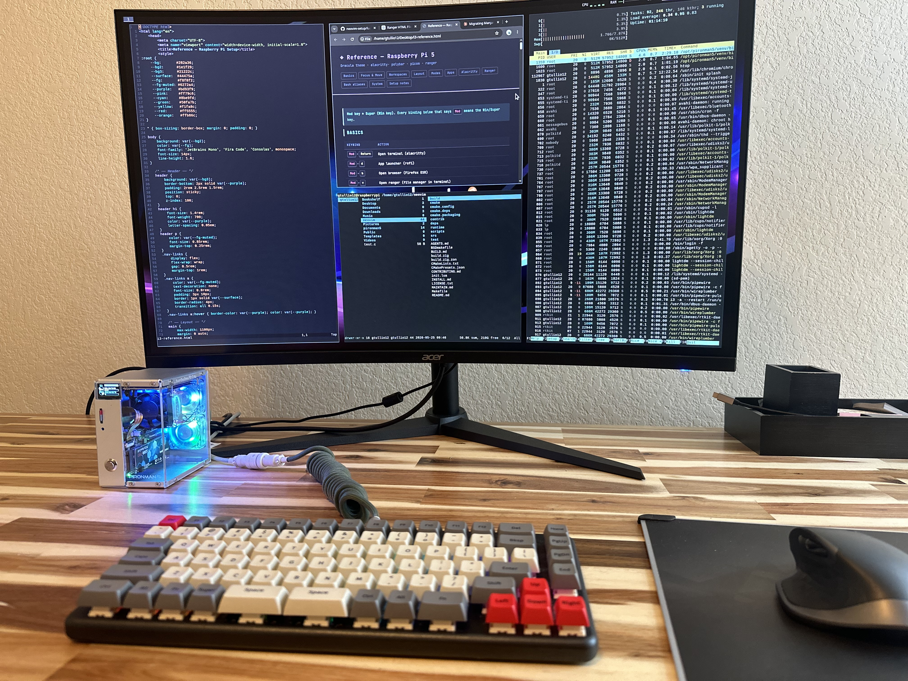
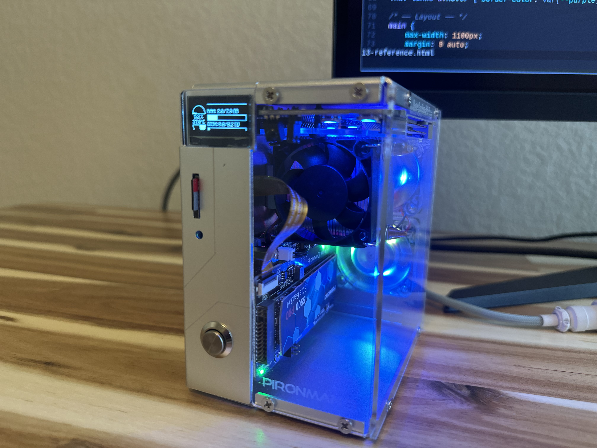
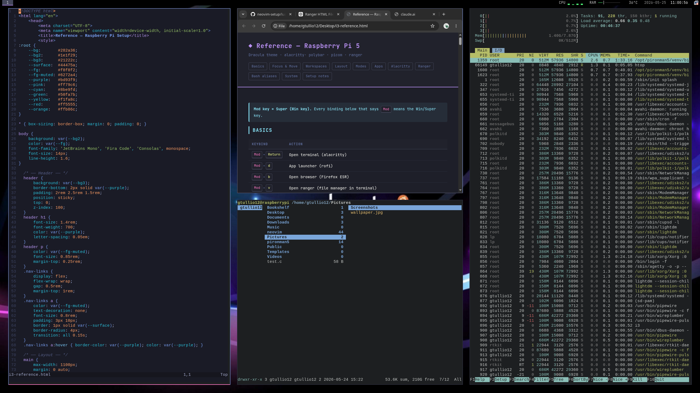

// Raspberry Pi 5 · Dev Environment
A purpose-built Unix environment for embedded systems, robotics, and C/C++ development. Built on a Raspberry Pi 5 inside a Pironman 5 case with NVMe SSD — running i3, neovim, and a fully keyboard-driven workflow.


// Hardware
The Pironman 5 turns a Raspberry Pi 5 into a proper desktop workstation — acrylic tower case with RGB lighting, OLED status display, active cooling, and PCIe NVMe support. Small enough to sit next to a keyboard, capable enough to compile and run a full embedded dev environment.
// Software Stack
Every tool chosen for a reason. Keyboard-driven, minimal, and fast.
Tiling window manager. Every window, workspace, and layout controlled from the keyboard. No mouse required.
Configured for C/C++, Python, and embedded development. LSP via clangd and pyright, plugin management via lazy.nvim.
GPU-accelerated terminal emulator. Fast, minimal, zero bloat. Dracula theme with JetBrains Mono.
Lightweight status bar showing CPU load, RAM usage, temperature, network status, and time.
Terminal file manager with vim keybindings and image preview. Faster than any GUI file manager for keyboard users.
Consistent color scheme across the entire environment — terminal, editor, status bar, and window borders.
// In Use
neovim, ranger, and htop tiled across workspaces.
